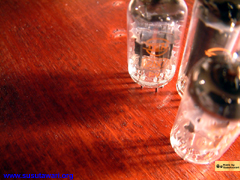
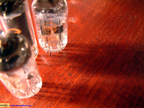

大学サークルの芸専のとある人に影響を受けて作った壁紙です。ある日、その人の家で真空管がなにげなく飾ってあるのを見て、思いつきました。左にアイコンを並べることを想定しています。また、CADなどで大きな画面を使う人用に大き目の画像も作りました。
| Size (Pixel) | Format | |
| 800x600 | JPG (515KByte) | BMP (1,407KByte) |
| 1024x768 | JPG (761KByte) | BMP (2,305KByte) |
| 1600x1200 | JPG (1,646KByte) | -- |
| 2048x1536 | JPG (2,067KByte) | -- |

Mac OSなどアイコンが右側に来る場合向けのバージョンです。ちなみに、真空管の置いてある机は家の近所の子供たちと作りました。よく見ると鉛筆による罫書きの跡が残ったままでした・・^^;
| Size (Pixel) | Format | ||
| 800x600 | JPG (517KByte) | TIFF (1,421KByte) | PICT (1,396KByte) |
| 1024x768 | JPG (761KByte) | TIFF (2,319KByte) | PICT (2,282KByte) |
| 1600x1200 | JPG (1,646KByte) | -- | -- |
| 2048x1536 | JPG (2,067KByte) | -- | -- |